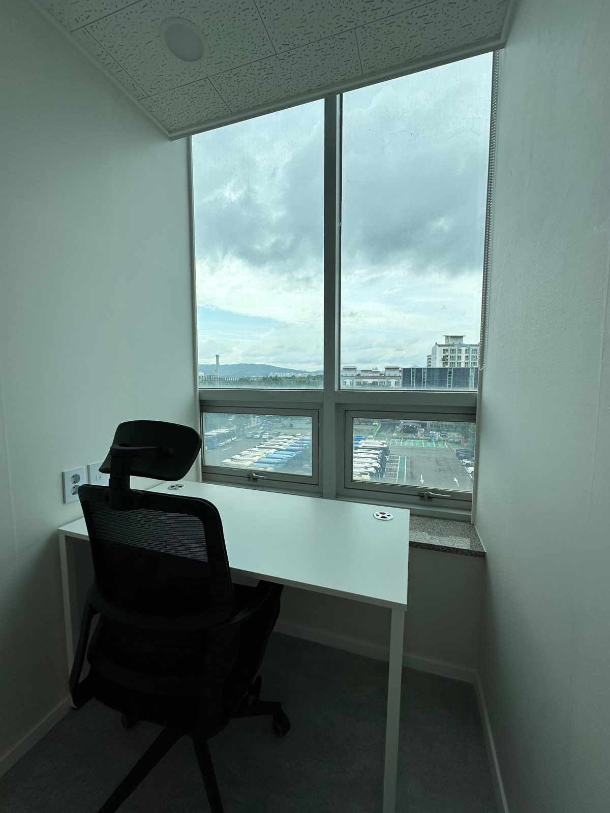
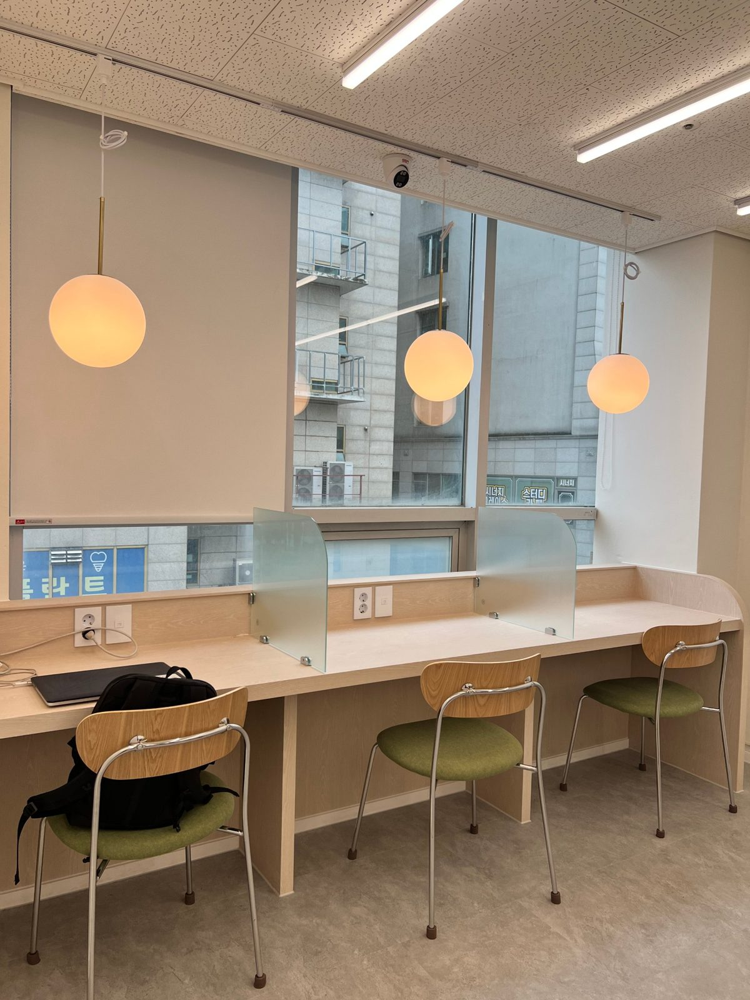

고덕그라시움 1인 공유오피스, 단지 근처에서 찾을 때 확인할 5가지
고덕그라시움은 단지가 크고 상가도 넓지만, 정작 "혼자 일할 사무실"은 단지 안에서 구하기가 쉽지 않습니다. 상가 사무실은 1인 사업자에게 크고, 카페는 통화가 불편합니다. 그래서 고덕그라시움 1인 공유오피스를 검색하는 분이 늘고 있습니다. 이 글은 재택근무자, 프리랜서, 1인 법인 대표가 고덕그라시움 근처에서 공유오피스를 고를 때 확인할 다섯 가지를 정리한 것입니다.
1. 집에서 얼마나 걸리는가
공유오피스는 매일 가는 곳입니다. 왕복 1시간이 넘으면 몇 달 안에 다시 집에서 일하게 됩니다. 고덕그라시움 기준으로는 상일동역·강일역 생활권, 즉 고덕동과 강일동 안에서 찾는 것이 현실적입니다. 점심에 집에 다녀올 수 있는 거리라면 재택과 출근의 장점을 둘 다 가져갈 수 있습니다.
2. 1인실인가, 고정석인가

"1인 공유오피스"라고 해도 두 종류가 있습니다. 문이 닫히는 독립 1인실과, 라운지 안에 내 책상 하나를 두는 고정석입니다. 상담 전화가 많거나 화상회의가 잦으면 1인실, 노트북 작업 위주면 고정석이 맞습니다. 고정석은 비용이 1인실의 절반 이하라서, 통화가 적은 분이 굳이 1인실을 쓸 이유는 없습니다.
3. 월 요금에 무엇이 포함되는가
관리비, 인터넷, 냉난방, 책상·의자가 포함인지 확인하세요. 상가 사무실은 이 항목이 전부 따로 붙습니다. 오피스워크넷 고덕강일점 기준으로 1인실은 내측 월 27만원, 창측 월 35만원, 라운지 고정석은 월 10만원부터이고 위 항목이 모두 포함입니다. 사업자등록 주소만 필요하면 비상주 월 2만원부터입니다. (모든 금액 부가세 별도)
4. 계약 기간과 해지 조건
1인 사업은 반년 뒤를 알기 어렵습니다. 1년 이상 묶이는 계약보다 월 단위로 시작해서 사업이 자리 잡으면 6개월·1년 결제로 바꾸는 쪽이 안전합니다. 장기 결제 할인이 있는지, 중간에 라운지석에서 1인실로 옮길 수 있는지도 미리 물어보세요.
5. 운영자가 같은 건물에 있는가
우편물 수령, 출입 문제, 계약 변경은 운영자가 상주해야 그날 해결됩니다. 무인으로만 운영되는 곳은 작은 일이 며칠씩 걸립니다. 계약 전에 "관리자가 어디 계시냐"를 꼭 물어보세요.
고덕그라시움에서 오피스워크넷 고덕강일점까지

오피스워크넷 고덕강일점은 고덕그라시움과 같은 5호선 생활권인 강일동 강일프라자 5층에 있습니다. 고덕동에서 차로 가까운 거리이고, 대중교통은 상일동역 다음 정거장인 강일역을 이용합니다. 본 건물에는 주차가 되지 않아 차로 오실 때는 인근 강일동 공영주차장을 이용하셔야 하는 점은 미리 알려드립니다.
정리하면, 고덕그라시움에서 1인 공유오피스를 찾는다면 "거리 → 1인실인지 고정석인지 → 포함 항목 → 계약 조건 → 운영자 상주" 순서로 확인하면 실패가 적습니다.
빈자리 확인
1인실과 고정석은 사진보다 직접 보는 게 빠릅니다. 톡톡으로 "고덕그라시움에서 가요, 1인실(또는 고정석) 보고 싶어요"라고 남겨주시면 현재 빈자리와 방문 가능한 시간을 안내해 드립니다.
네이버 톡톡으로 묻기 요금표 보기